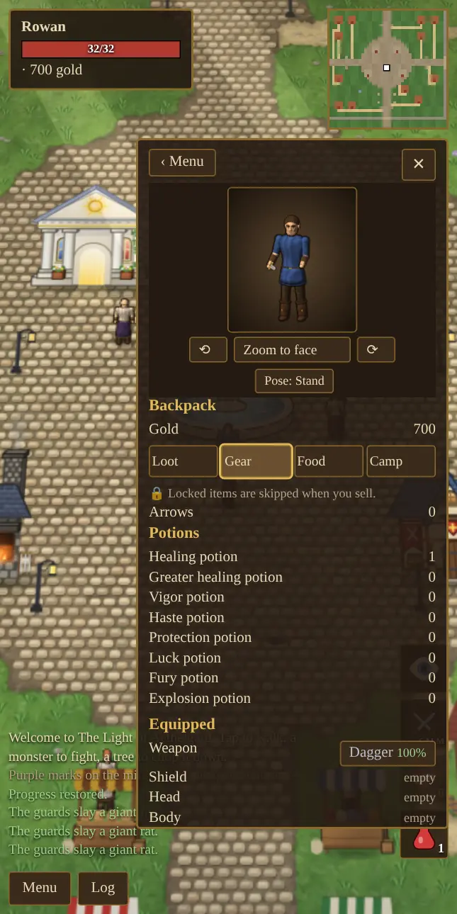

Getting Started
Everything from the title screen to your first steps outside the walls.
The title screen and your saves
Tap the title screen to see the main menu.
- Continue picks up your most recent hero and shows how long you have played.
- New Game opens the character creator. Every new game builds its own world, so the dungeons, mines and forests are laid out differently each time.
- Load Game lists every saved hero.
The game saves automatically as you play. Saves live in the browser on the device you play on, so a hero made on your phone is not on your computer. Clearing the browser's site data deletes your saves.
Creating a character
The creator shows a live preview of your hero. Nothing you choose here locks you out of anything later, and appearance is purely cosmetic.
- Name: up to 14 letters. Townsfolk use it, and it appears above your health bar.
- Hair: 20 styles, plus hair color, skin and tunic colors.
- Facial hair: none, stubble, mustache, goatee, full, chops, handlebar or long. Female characters have no facial hair, so these are greyed out.
- Body: male or female.
- Face: 18 faces, from kind and cheery to sly, grizzled and scamp.
- Eyes: six colors.
Spending your attribute points
Strength, Dexterity and Intelligence all start at 10, and you have 50 points to share between them using the + and − buttons. Hold a button to keep counting. You must spend every point before you tap Begin Adventure. After that, attributes grow only through use (see Attributes).
Some sensible starting spreads:
| Plan | Str | Dex | Int | Why |
|---|---|---|---|---|
| Warrior | 40 | 20 | 10 | More health and harder hits, and plate armor early. |
| Balanced | 32 | 26 | 22 | A good first hero who can try everything. |
| Archer | 25 | 35 | 10 | Fast shots and quick feet. |
| Mage | 22 | 13 | 35 | More mana, stronger spells, faster skill gain. Fragile at first. |
Your starting health equals your Strength, so a hero with 10 Strength begins with only 10 hit points, which is very dangerous.
Every hero starts with the same skills: Swordsmanship 20, Lumberjacking 15, Parrying 10, Archery 10, Magery 10, Meditation 5, Sneaking 5, Pickpocket 5 and Tactics 5.
Moving and doing things
Everything is done by tapping. Your hero walks to what you tapped and does the obvious thing.
| Tap on… | What happens |
|---|---|
| Open ground | Walk there, going around obstacles. |
| A monster | With war mode on, attack it. With war mode off, walk up to it; you only fight once it attacks. |
| A tree | Chop it for logs. |
| A herb or cotton bush | Gather it. |
| An animal | Look at it. With shears, a woolly sheep is sheared. With war mode on, hunt it. With a shepherd's crook and war mode off, try to tame it. |
| A house | Hear who lives there. |
| An ore vein | Mine it, if you own a pickaxe. |
| A person | Talk to them. |
| A door | Go inside. Tap the doorway again to leave. |
| A spinning wheel, loom, tub or cauldron | Start working at it, inside the craft shops. |
| A dungeon entrance | Go down. |
| A body or chest | Open it and take the loot. |
| A bird or bat in the sky | Shoot it with a bow or Lightning, or tame it with a crook. |
On a computer you can also walk with the arrow keys or WASD. Pinch on a phone, or use the mouse wheel, to zoom in and out.
Talking to people

Tap anyone in town to talk. Every conversation offers a few ways to answer, a "Who are you?" question that tells you their story, any services they offer (trading, healing, repairs or lessons), and a chance to ask for a handout. What people say depends on your reputation.
The screen
- Top left: your name, reputation title, health bar, mana bar (once you know a spell), active boosts and gold. Tap your name to open the character sheet.
- Top right: the minimap. Purple marks are dungeon entrances and gold marks are world bosses. Tap it to open the full map.
- Right side: a column of buttons. The eye toggles sneaking, the crossed swords toggle war mode (labelled CALM or WAR), and your potions and spells sit below. Once you carry more than two kinds of potion, the extras go into a potion pouch. If you have a pet with you, its paw button sits at the very bottom of the column, under the spellbook.
- Bottom left: the message log. The Log button opens the last 200 messages.
The full map

Tap the minimap to open the map. Use the + and − buttons to zoom from 1× to 8×, and drag to pan when zoomed in. Inside dungeons and buildings the map always opens fully zoomed out, because those places are small.
The menu

- Backpack has four tabs. Loot holds materials and reagents, Gear is where you equip things, drink potions and read scrolls, Food shows your hunger and lets you eat, and Camp holds logs, tents and bedrolls and builds a campfire. You can lock items so they are never sold by accident.
- Skills lists every skill you have discovered.
- Craft has carpentry and jewelcrafting. Smithing, sewing, brewing and enchanting are done at their own stations in town.
- Spell Book appears once you know a spell (see Magic).
- Options has music and sound volume.
- Main Menu saves and returns to the title screen.
Day and night
A full day and night takes 16 minutes of real time. Townsfolk follow the clock (see The World). After dark, tougher night creatures such as bloodmoon rats, nightblood orcs and revenants come out, so stay near town on your first nights.
First steps
- Look around town. The temple heals you. Mara's shop buys loot and sells gear. Garrick's forge repairs and upgrades. The Training Hall has teachers. The storage chest by the fountain keeps your things safe.
- Upgrade your dagger. A dagger adds +1 damage; a longsword adds +3 for 150 gold.
- Hunt near the walls. Monsters get tougher the further you go from town. Rats and orcs live close by and hit a new hero gently. Monsters never come in through the gates.
- Sell everything. On the Sell tab of Mara's shop, Sell all loot sells your materials in one tap. Lock what you want to keep first.
- Carry potions. A healing potion restores 30 health and costs 35 gold.
Next: Attributes.